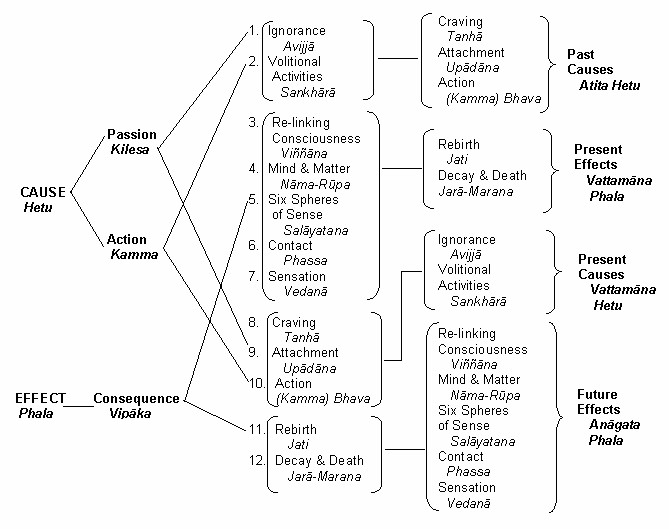

| BuddhaSasana Home Page | English Section |
THE BUDDHA AND HIS TEACHINGS
Venerable Nārada Mahāthera
|
CHAPTER 25 THE WHEEL OF LIFE - PATICCA-SAMUPPĀDA
The process of rebirth has been fully explained by the Buddha in the Paticca-Samuppāda. Paticca means "because of" or "dependent upon" samuppāda "'arising" or "origination". Although the literal meaning of the term is "arising because of" or "dependent arising or origination," it is applied to the whole causal formula which consists of twelve interdependent causes and effects, technically called paccaya and paccayuppanna. The method of the Paticca-Samuppāda should be understood as follows:
Because of A arises B. Because of B arises C. Paticca-Samuppāda is a discourse on the process of birth and death, and not a philosophical theory of the evolution of the world. It deals with the cause of rebirth and suffering with a view to helping men to get rid of the ills of life. It makes no attempt to solve the riddle of an absolute origin of life. It merely explains the "simple happening of a state, dependent on its antecedent state. [1]" Ignorance (avijjā) of the truth of suffering, its cause, its end, and the way to its end, is the chief cause that sets the wheel of life in motion. In other words, it is the not-knowingness of things as they truly are, or of oneself as one really is. It clouds all right understanding. "Ignorance is the deep delusion wherein we here so long are circling round, [2]" says the Buddha. When ignorance is destroyed and turned into knowingness, all causality is shattered as in the case of the Buddhas and Arahants. In the Itivuttaka [3] the Buddha states -- "Those who have destroyed delusion and broken through the dense darkness, will wander no more: causality exists no more for them." Ignorance of the past, future, both past and future and "The Dependent Origination" is also regarded as Avijjā. Dependent on ignorance, arise conditioning activities (samkhārā). Samkharā is a multisignificant term which should be understood according to the context. Here the term signifies immoral (akusala), moral (kusala) and unshakable (āneñja) volitions (cetanā) which constitute Kamma that produces rebirth. The first embraces all volitions in the twelve types of immoral consciousness; the second, all volitions in the eight types of Beautiful (sobhana) moral consciousness and the five types of moral rūpajhāna consciousness; the third, all volitions in the four types of moral arūpajhāna consciousness. Samkhārā, as one of the five aggregates, implies fifty of the fifty-two mental states, excluding feeling and perception. There is no proper English equivalent which gives the exact connotation of this Pāli term. The volitions of the four supramundane Path consciousness (lokuttara maggacitta) are not regarded as samkhārā because they tend to eradicate ignorance. Wisdom (paññā) is predominant in supramundane types of consciousness while volition (cetanā) is predominant in the mundane types of consciousness. All moral and immoral thoughts, words and deeds are included in samkhārā. Actions, whether good or bad, which are directly rooted in, or indirectly tainted with ignorance, and which must necessarily produce their due effects, tend to prolong wandering in Samsāra. Nevertheless, good deeds, freed from greed, hate and delusion, are necessary to get rid of the ills of life. Accordingly the Buddha compares His Dhamma to a raft whereby one crosses the ocean of life. The activities of Buddhas and Arahants, however, are not treated as samkhārā as they have eradicated ignorance. Ignorance is predominant in immoral activities, while it is latent in moral activities. Hence both moral and immoral activities are regarded as caused by ignorance. Dependent on past conditioning activities, arises relinking or rebirth-consciousness (patisandhi-viññāna) in a subsequent birth. It is so called because it links the past with the present, and is the initial consciousness one experiences at the moment of conception. Viññāna strictly denotes the nineteen types of rebirth-consciousness (patisandhi-viññāna) described in the Abhidhamma. All the thirty-two types of resultant consciousness (vipāka citta) experienced during lifetime, are also implied by the term. The foetus in the mother's womb is formed by the combination of this relinking-consciousness with the sperm and ovum cells of the parents. In this consciousness, are latent all the past impressions, characteristics and tendencies of that particular individual life-flux. This rebirth-consciousness is regarded as pure [4] as it is either devoid of immoral roots of lust, hatred, and delusion [5] or accompanied by moral roots. [6] Simultaneous with the arising of the relinking-consciousness there occur mind and matter (nāma-rūpa) or, as some scholars prefer to say, "corporeal organism." The second and third factors (samkhārā and viññāna) pertain to the past and present lives of an individual. The third and fourth factors (viññāna and nāma-rūpa) on the contrary, are contemporaneous. This compound nāma-rūpa should be understood as nāma (mind) alone, rūpa (matter) alone, and nāma-rūpa (mind and matter) together. In the case of Formless Planes (arūpa) there arises only mind; in the case of Mindless (asañña) Planes, only matter; in the case of Sentient Realm (kāma) and Realms of Form (rūpa), both mind and matter. Nāma here means the three aggregates -- feeling (vedanā), perception (sañña) and mental states (samkhārā) -- that arise simultaneous with the relinking-consciousness. Rūpa means the three decads -- kāya (body), bhāva (sex), and vatthu (seat of consciousness) -- that also arise simultaneous with the relinking-consciousness, conditioned by past Kamma. The body-decad is composed of the four elements --namely, 1. the element of extension (pathavi), 2. the element of cohesion (āpo), 3. the element of heat (tejo), 4. the element of motion (vāyo); its four derivatives (upādā rūpa) -- namely, 5. colour (vanna), 6. odour (gandha), 7. taste (rasa), 8. nutritive essence (ojā), 9. vitality (jīvitindriya) and 10. body (kāya). Sex-decad and base decad also consist of the first nine and sex (bhāva) and seat of consciousness (vatthu) respectively. From this it is evident that sex is determined by past Kamma at the very conception of the being. Here kāya means the sensitive part of the body (pasāda). Sex is not developed at the moment of conception but the potentiality is latent. Neither the heart nor the brain, the supposed seat of consciousness, has been evolved at the moment of conception, but the potentiality of the seat is latent. In this connection it should be remarked that the Buddha did not definitely assign a specific seat for consciousness as He has done with the other senses. It was the cardiac theory (the view that the heart is the seat of consciousness) that prevailed in His time, and this was evidently supported by the Upanishads. The Buddha could have accepted the popular theory, but He did not commit Himself. In the Patthāna, the Book of Relations, the Buddha refers to the seat of consciousness, in such indirect terms as "yam rūpam nissāya -- depending on that material thing", without positively asserting whether that rūpa was either the heart (hadaya) or the brain. But, according to the view of commentators like Venerable Buddhaghosa and Anuruddha, the seat of consciousness is definitely the heart. It should be understood that the Buddha neither accepted nor rejected the popular cardiac theory. During the embryonic period the six sense-bases (salāyatana) gradually evolve from these psycho-physical phenomena in which are latent infinite potentialities. The insignificant infinitesimally small speck now develops into a complex six senses-machine. Human machine is very simple in its beginning but very complex in its end. Ordinary machines, on the other hand, are complex in the beginning but very simple in the end. The force of a finger is sufficient to operate even a most gigantic machine. The six-senses-human machine now operates almost mechanically without any agent like a soul to act as the operator. All the six senses -- eye, ear, nose, tongue, body and mind -- have their respective objects and functions. The six sense-objects such as forms, sounds, odours, sapids, tangibles and mental objects collide with their respective sense-organs giving rise to six types of consciousness. The conjunction of the sense-bases, sense-objects and the resultant consciousness is contact (phassa) which is purely subjective and impersonal. The Buddha states: "Because of eye and forms, visual consciousness arises; contact is the conjunction of the three. Because of ear and sounds, arises auditory consciousness; because of nose and odours, arises olfactory consciousness; because of tongue and sapids, arises gustatory consciousness; because of body and tangibles, arises tactile consciousness; because of mind and mental objects, arises mind-consciousness. The conjuction of these three is contact. (Samyutta Nikāya, part ii, p. 70; Kindred Sayings, part ii, p. 50.) It should not be understood that mere collision is contact (na sangatimatto eva phasso). Dependent on contact, feelings (vedanā) arise. Strictly speaking, it is feeling that experiences an object when it comes in contact with the senses. It is this feeling that experiences the desirable or undesirable fruits of an action done in this or in a previous birth. Besides this mental state there is no soul or any other agent to experience the result of the action. Feeling or, as some prefer to say, sensation, is a mental state common to all types of consciousness. Chiefly there are three kinds of feeling -- namely pleasurable (somanassa), unpleasurable (domanassa), and neutral (adukkhamasukha). With physical pain (dukkha) and physical happiness (sukha) there are altogether five kinds of feelings. The neutral feeling is also termed upekkhā which may be indifference or equanimity. According to Abhidhamma there is only one type of consciousness accompanied by pain. Similarly there is only one accompanied by happiness. Two are connected with an unpleasurable feeling. Of the 89 types of consciousness, in the remaining 85 are found either a pleasurable or a neutral feeling It should be understood here that Nibbānic bliss is not associated with any kind of feeling. Nibbānic bliss is certainly the highest happiness (Nibbānam paramam sukham), but it is the happiness of relief from suffering. It is not the enjoyment of any pleasurable object. Dependent on feeling, arises craving (tanhā) which, like ignorance, is the other most important factor in the "Dependent Origination." Attachment, thirst, clinging are some renderings for this Pāli term. Craving is threefold -- namely, craving for sensual pleasures (kāmatanhā), craving for sensual pleasures associated with the view of eternalism, (bhavatanhā) i.e., enjoying pleasures thinking that they are imperishable, and craving for sensual pleasures with the view of nihilism (vibhavatanhā) i.e., enjoying pleasures thinking that everything perishes after death. The last is the materialistic standpoint. Bhavatanhā and vibhavatanhā are also interpreted as attachment to Realms of Form (rūpabhava) and Formless Realms (arūpabhava) respectively. Usually these two terms are rendered by craving for existence and non-existence. There are six kinds of craving corresponding to the six sense objects such as form, sound and so on. They become twelve when they are treated as internal and external. They are reckoned as 36 when viewed as past, present and future. When multiplied by the foregoing three kinds of craving, they amount to 108. It is natural for a worldling to develop a craving for the pleasures of sense. To overcome sense-desires is extremely difficult. The most powerful factors in the wheel of life are ignorance and craving, the two main causes of the Dependent Origination. Ignorance is shown as the past cause that conditions the present; and craving, the present cause that conditions the future. Dependent on craving is grasping (upādāna) which is intense craving. Tanhā is like groping in the dark to steal an object. Upādāna corresponds to the actual stealing of the object. Grasping is caused by both attachment and error. It gives rise to the false notions, of "I" and "mine." Grasping is fourfold -- namely, Sensuality, False Views, Adherence to rites and ceremonies, and the Theory of a soul. The last two are also regarded as false views. Dependent on grasping arises bhava which, literally, means becoming. It is explained as both moral and immoral actions which constitute Kamma (Kammabhava) -- active process of becoming and the different planes of existence (upapattibhava) -- passive process of becoming. The subtle difference between samkhārā and kammabhava is that the former pertains to the past and the latter to the present life. By both are meant Kammic activities. It is only the Kammabhava that conditions the future birth. Dependent on becoming arises birth (jāti) in a subsequent life. Birth strictly speaking, is the arising of the psycho-physical phenomena (khandhānam pātubhāvo). Old age and death (jarāmarana), are the inevitable results of birth. If, on account of a cause, an effect arises, then, if the cause ceases, the effect also must cease. The reverse order of the Paticca-Samuppāda will make the matter clear. Old age and death are only possible in and with a psycho-physical organism, that is to say, a six-senses-machine. Such an organism must be born, therefore it presupposes birth. But birth is the inevitable result of past Kamma or action, which is conditioned by grasping due to craving. Such craving appears when feeling arises. Feeling is the outcome of contact between senses and objects. Therefore it presupposes organs of sense which cannot exist without mind and body. Mind originates with a rebirth-consciousness, conditioned by activities, due to ignorance of things as they truly are. The whole formula may be summed up thus:
Dependent on Ignorance arise Conditioning Activities.
The complete cessation of Ignorance leads to the
cessation of Conditioning Activities. The first two of these twelve factors pertain to the past, the middle eight to the present, and the last two to the future. Of them Moral and Immoral Activities (samkharā) and Actions (bhava) are regarded as Kamma. Ignorance (avijjā), Craving (tanhā), and Grasping (upādāna) are regarded as Passions or Defilements (kilesa); Relinking-Consciousness (patisandhi-viññāna), Mind and Matter (nāma-rūpa), Spheres of Sense (salāyatana), Contact (phassa), Feeling (vedanā), Birth (jāti), Decay and Death (jarāmaranā) are regarded as Effects (vipāka). Thus Ignorance, Activities, Craving, Grasping and Kamma, the five causes of the past, condition the present five effects (phala) -- namely, Relinking-Consciousness, Mind and Matter, Spheres of Sense, Contact, and Feeling. In the same way Craving, Grasping, Kamma, Ignorance, and Activities of the present condition the above five effects of the future. This process of cause and effect continues ad infinitum. A beginning of this process cannot be determined as it is impossible to conceive of a time when this life-flux was not encompassed by ignorance. But when this ignorance is replaced by wisdom and the life-flux realizes the Nibbāna Dhatu, then only does the rebirth process terminate.

[1] Tabbhāvabhāvibhāvākāramatta - Abhidhammattha Sangaha. See "Manual of Abhidhamma" by Nārada Thera, p. 360. [2] Sutta Nipāta v. 730. [3] p. 14. [4] "Radiant is this consciousness," (pabhassaram idam cittam) says the Buddha in the Anguttara Nikāya vol. 1, p. 10. According to the commentator the Buddha was thus referring to the rebirth-consciousness. [5] In the case of ‘Rootless Resultants’ (Ahetuka-vipāka). [6] In the case of "Resultants with Roots" (Sahetukavipāka). [7] Chambers, Buddha’s Teachings, vv. 729, 730 -ooOoo- Top | Contents | 01 | 02 | 03 | 04 | 05 | 06 | 07 | 08 | 09 | 10 | 11 | 12 | 13 | 14 | 15 | 16 | 17 | 18 | 19 | 20 | 21 | 22 | 23 | 24 | 25 | 26 | 27 | 28 | 29 | 30 | 31 | 32 | 33 | 34 | 35 | 36 | 37 | 38 | 39 | 40 | 41 | 42 | 43 | 44 |
Sincere thanks to Mr Pham Kim Khanh - Nārada
Center, Seattle, U.S.A.,
for making this digital version available
(Binh Anson, September 2002).
(See also: Vietnamese translation - "Đức Phật và Phật Pháp")
[Back
to English Index]
last updated:
01-09-2002